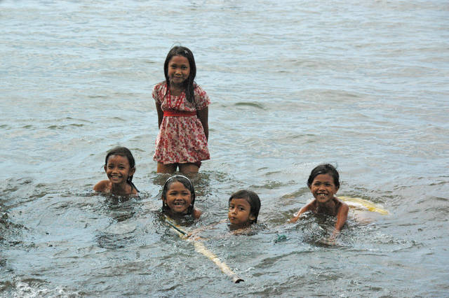
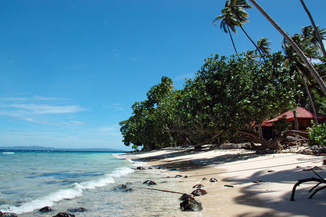
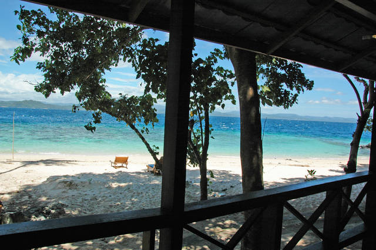
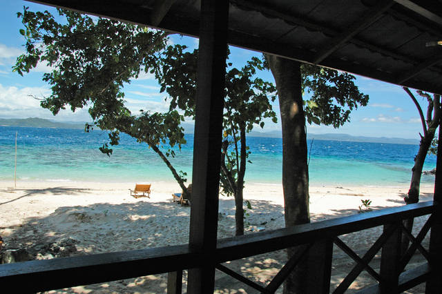

Beim zweiten Anlauf ist nichts dazwischen gekommen. Mit zwei Tagen Verspätung haben wir endlich Manado erreicht, wo uns herrliches Tropenklima mit feucht-schwüler Hitze erwartete. Die Abgesandten unseres Hotels haben uns in einem Pickup durch ein palmen- und bananenreiches Hinterland Richtung Nordküste gekarrt. Die kleinen Wellblech-Siedlungen, die alle paar Minuten am Straßenrand auftauchen, wirken erstaunlich gepflegt und bieten ein enormes Spektrum fast-christlicher Wellblech-Kirchen. Es hat uns überrascht, dass die EM auch hier mit Spannung verfolgt wird. Dabei ist man hier nicht unparteiisch: Viele Häuser schmücken Deutschland-, Holland- oder Portugalflaggen.
Die letzte Etappe führte uns über einen schmalen Streifen Meer endlich zur Insel Bangka. Die Insel ist größer als erwartet und sehr grün. Unser Hotel – das Murex Bangka Resort – liegt einsam in einer winzigen Bucht, die nur vom Meer aus zu erreichen ist. Dass das Resort nur fünf Hütten hat, kam uns schon wenig vor, dass wir aber die einzigen Gäste sind, hätten wir nicht gedacht. Die Crew wirkt wie eine große Familie und ist es zum Teil vermutlich auch; der Umgang ist entsprechend unkompliziert.
 Unsere Hütte ist (wie alles hier) nur zehn Schritte vom Meer entfernt und hat eine schöne Veranda, auf der man sich vor der Sonne verstecken kann. Das Bad liegt dahinter im Freien, so dass man unter Bäumen duschen kann. Wir haben sogar eine Klimaanlage. Der Gesamteindruck entspricht erfrischend wenig einer Pauschalreise. Den Rest des Tages haben wir mit verspäteter Urlaubseinstimmung und Sonnenbrandkriegen verbracht.
 
